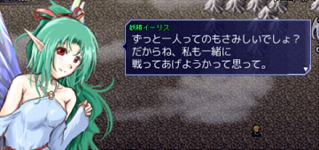
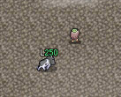
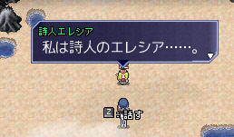

シルバーセカンド開発日誌
2013年09月
■
2013-09-28 (土) 片道勇者ボツネタ▼
【今週の状況】
今週は学生さんの作品を見させていただいたり
オリジナル英語版のバグ修正したり旅行に行ってたり
アーマードコアVDが発売されたり
ちょっとだけハウスキープに奔走してたりしてたので、
大きな進行はありませんでした。
片道勇者+でボツになったクラス「魔王」のED用ラクガキ。
「魔王」みたいに通常と立場が違うキャラで遊ぶとすごく面白そうなのですが、
かなり多くのNPCのデータを新規に作らねばパッとしない感じだったので、
面白そうではありましたが今回はちょっと見送りました。
次はプレイヤーの立場が違う場合でも、NPCの反応を
うまく変えやすい造りにしたいですね。
片道勇者のオリジナルVer英語版のほうは最終調整＆デバッグ作業に入っています。
プラスVerは何度も言いますが日本語版でさえまだなので鋭意開発中です。
プラス版はイベント周りでどんどん新しいネタが浮かんで永久ループに
入ってるので、一旦イベント編を終わらせて先に行かないとちっと進みません。
なのでイベント編が一区切りするところまでいったら、
残りの、「マップパーツ（建物）」、「アイテム追加」、「バランス調整」、
「プレミアム感を感じられそうなオマケ要素色々」の実装を終えた後、
また戻ってイベント追加を行っていきたいと思います。
ちょっと余談ですが、イベント作りをしていると、
機能追加 → この機能を流用して何か作れないかな？ → アイデア発生
→ 追加で機能追加 → この機能を流用して（略）
の好循環が発生することが分かりました。
どうやら自分の場合、イベントのアイデアはゼロから生み出すよりも
機能・世界観の制約から枝のように伸ばしていくほうが作りやすいようです。
イベント編の作業に入るまでは「何も思いつかないよー！」と思ってましたが、
いざイベント編に入ると意外にもどんどん思いつくのです。
年を取ると「見合わないほどの大きな手間を投入する必要があるアイデア」を
採用することが心理的に難しくなってくる感じがしますが、こういった形でも、
新しいアイデアを思いつくための条件を見いだせると嬉しいものです。
以下は拍手返信です。
プラス版へのご意見・アイデアもいつもありがとうございます！
＞褐色…おっぱい…セーブ屋…そうか！分かったぞ！ .
＞セーブと称しておっぱいで誘惑して自分もろとも勇者を .
＞闇に引きずり込む魔王（or『闇』）信奉者（一方的）だな！
＞えぐい！えぐいぞ！！もっとやれ！！！ .
このコメントをいただいて思い出したことがあります！
実はネタ帳には、闇に飲まれる直前までいかがわしいお姉さんと
イチャイチャできてフィニッシュ（笑）を見ようとすると
闇に飲まれるイベントが案としてあったのですが、
作るのが面倒くさすぎてボツになったんです。
この案に限らず、片道勇者には
ちょっとくらい退廃的なイメージも入れたかったんですが、
結局、住人がのんびり闇にのまれていくゲームになってしまいましたね。
まともに世界の破滅を理解してる一般人は耳長の里で
回復してくれる女の子くらいかも。■
2013-09-20 (金) 片道勇者+ その15▼
【片道勇者＋ 開発 15】 国システム
旅を進めていくとどうしても変化が少なくなるので、
どうやってちょっと変化を持たせようか考えた結果、
ちょっとした偏りを付けるために
「国」という要素を設けることにしてみました（実装途中！）
褐色な異民族の人たち
国が変わるとどうなるんだー！？というと、
出てくる街の住人や出現地形の傾向が変化します。
そのほか、国が違うことによるギミックも
何か入れられたらいいなあと考え中です（交易チックな要素とか）。
ちょっとした気分転換要素なのでめっちゃ面白くなるってわけじゃないですが、
お金が必須すぎるとか、食い物山盛りだけど武器防具の補給が難しいとか、
そういう観点で国の変化を付ける予定です。
他の用事も複数入っているので来週は進行がゆっくりになりそうですが、
以後も色々ネタを考えながら進めていきます。
以下は拍手返信です。
今回も片道+へのたくさんのご意見をいただき、誠にありがとうございます！
＞まさかのイーリス参戦！ しかし、イーリス変身とかしないで小さいまま…？
＞ウルフさんとこはスケイルやアウルみたいに変身して一緒に戦う展開がある
＞一方で、リス君のホールドがどうしてもちらついて…術を一発撃ったら .
＞真っ白になったり、しませんよね？ .
真っ白になったりはありませんが参戦はミニサイズのままです！
ペット並みの耐久力ですが敵を弱らせる遠距離状態異常持ち！の予定です。■
2013-09-15 (日) 片道勇者+ その14▼
【片道勇者＋ 開発 14】

片道勇者+ではイーリスも戦闘に出られる……予定！
今週は新しい仲間キャラを実装したり、
（仲間みたいに同じマスではなく）後ろをついてくるNPCを実装したり、
全体的にキャラクターの追加を行っていました。
毎度のことなんですが、NPCはいつ出現するか分からないので、
メッセージが気軽に作りづらいのが難です。並べても変にならないかとか、
本筋とあまり関係のないところで脳のメモリを使うのがほんの少し大変です。
結局、最後はそういうところもポーイと放り投げるんですけれど！
衛兵しかいない街とか、一体何を守ってるんだ衛兵！
で、今回から新たに実装されたのは、後ろを付いてくるNPCです。

たとえばその一例、「乳牛」！！
1日1回、牛乳をもらえて元気度が回復する他、
ピンチなときは囮にしたり肉にしたりすることができます。
ただし山や海は越えられません。
これと同様の処理を利用して、
「仲間にはならないけどついてくるNPC傭兵」
を作ったり、「荷物を拾ってくれる荷運び動物」を
作ったりもできそうで、ちょっとワクワクしています。
以下は拍手返信です。皆さまいつもありがとうございます！
＞質問なのですが、片道勇者のデータを＋に
＞引き継いだりとかできるのでしょうか？ .
＞やり込み中なので気になりました。 .
データ構成が違うので引き継ぎは難しいのですが、
クリアしたフラグ・手に入れた特徴・エピローグの
コンバートくらいならば何とか可能だと思います。
次元倉庫はアイテムフォーマットが変わってくるので、
空っぽに戻ることになると思います。
＞まじっすか！イーリスさんが戦うなんて全く .
＞役に立たなそう！でもぜひ連れて歩きたいです！
いちおう隠し仲間なので、主人公を食わない程度に
ほどほどに便利ですよ！
＞すもきんさんはゲーム製作においてモチベーション維持って
＞どうなさっているんでしょうか。私も小説執筆をしており、一応
＞プロを目指していますが、物凄く集中できた期間はあったのに、
＞ここ2、3年は無気力状態が続いています。10年以上もゲーム
＞製作に没頭できるすもきんさんが本当に羨ましく感じます。 .
＞ある意味、異常ささえ感じてしまうくらいです（失礼ですみません）。
＞モチベーションの維持、または回復のため、 .
＞心がけていることなどはありますでしょうか？ .
私のモチベーション維持に関しては、
「奇跡的にも作ったゲームを面白いと言ってくれる友達がいたこと」と、
「挑戦する場へのあこがれがあったこと」と、
「共に切磋琢磨する仲間がいたこと」の3点がとても大きかったです。
（長いので以下追記） ▼追記を開く▼
しかしそれがなかった頃、つまり私がゲーム開発に触れた当初、
最初の3年くらいはおもしろくやっていたけれど、
そこから2年くらいは行き詰まったような感じになって
特に方向性もなくダラダラやってるような時期がありました。
当時は作りたいものがあるわけでもなく、
ただ「作る」という行為が面白かっただけでした。
しかし結局それにも飽きて、一時期空っぽになっちゃったのです。
それで何一つ完成しないまま結局計5年間が経ったわけで、
自分には素質どころか根気さえないなと思っていました。
そこから色々あって、たまたま1日で作ったレジェレス1話を
友人に遊ばせてみたところ、えらくおもしろがってくれたのが
きっかけになって、そこから全てが始まりました。
心に火が付いたのだと思います。
「今は技術がないけど、徐々に鍛えて色んなゲームを
作れるようになりたい」と強く願うことになって、
そしてシルフェイド見聞録に至ります（未完だけど！！！）
それ以後は、ネット上の同じ目標の他人と出会って切磋琢磨しあったり、
また、コンテストパークを目指してがんばれたことが
モチベーション持続には非常に大きかったように思います。
コンテストパーク投稿が目標になって、
次はゲーム開発を生活の糧にすることが目標になって……
となって、最後には、毎日やらないと気持ち悪くなってきて、
いつの間にか常にゲームを作り続けている感じになりました。
もちろん、創作とはそれまでにないものを作る作業ですから、
日々やっていても、苦しい日はしょっちゅうあります。
なお私の場合は、ライフハック（日常の工夫）的な
モチベーションアップ方法はいつか慣れちゃって、
なかなか効果が長続きしないんですよ。
結局のところ、自分のモチベーションの維持に一番効いたのは、
「具体的な結果が出る場に挑戦すること」と、
「がんばってる人を一方的にでもライバル視して切磋琢磨すること」
だったと思います。
最近はTwitterなどもありますから、後者はだいぶ楽になった印象です。
まとめると私は、友人が楽しんでくれたことで火が付いて、
勝手な他人へのライバル視と、賞（評価）への欲求などで、
ギリギリ何とかモチベーションをつないできました、という感じです。
これらがなかったら、自分はここまで続けられなかったでしょう。
えらく長いこと続けてる人も、危うい綱渡りみたいなモチベーション維持で
ここまで来てる人は多いんじゃないかなと思います。
ただ一方で、それが分かってるからこそ、
「苦しいしやる気も出ないけど、この状況はきっとみんなそうだから、
ここでちょっと多めにがんばれば他の人を超えられるはずだ！」
と考えてきたことで、これまで続けられてきた感じもあります。
つらさを燃料にする「負けず嫌い内燃機関」とでも言うような発想ですが、
自分の性格には合ってて、ずいぶん助けられました。
モチベーションを維持する方法も、結局はオーダーメイドが
最強でしょうから、皆さんにも自分の性格に合った
モチベーション維持方法が見つかることをお祈りしています。
ただ、もしかしたら他にもっと打ち込めることが見つかるかもしれませんから、
その辺りは臨機応変に！ ときには回り道もいいと思いますし、
色んなことをつまみ食いしていける才能ならばそれもまた役に立つはずです。
皆さんにとって一生懸命になれることが見つかりますように！■
2013-09-07 (土) 片道勇者+ その13▼
【片道勇者＋ 開発 13】
今週はちょっぴり体調がグズグズでした。
ウディコンの閉幕作業やらで疲れたのかもしれませんが
まあたまにはこういう時も。
ひとまず手元の英語版データは向こうに送ったので、
ぼちぼちこちらでもテストを続けつつ状況進行待ちです。
それと、今週は片道勇者+の新NPC作成にいそしんでいました。
主にクラス別の専用イベントが発生するようなNPCです。

詩人エレシア、プレイヤーが詩人なら
大金を払って新しい歌を習得できます。
詩人エレシアは開始時のTipsで大活躍してますが、
人間的には微妙に尊敬できない人という設定です。
仲間を盾にして自分一人生き残ることもいとわない！
それが詩人のサガ！
え？ 勇者もそんなに変わらないって？
他には護衛クエストやゲーム後半向けのNPCを
実装予定です。鍛冶屋（高い）とか旅の料理人（高い）とか。
今後も引き続き、プラスの方を色々実装しつつ、
英語版の準備もしつつで進めていくことになると思います。
英語版については、そろそろ何か第一報が出るかもしれません。
といってもプラスはまだ完成にはほど遠いので、
もし出るならオリジナル翻訳版の件です。
以下は拍手返信です、いつもコメントありがとうございます！
片道勇者へのご意見も全部メモらせていただいております！
＞PSO2でヤバイことが。 .
＞アップデートでHDDの中身が消えるとかなんとか。
＞前代未聞の事件ですな。 .
私も他人事じゃありません！ うっかりやらかさないか心配です。
インストール・アンインストールって、要するに他人にPCの中を
好きにいじらせることになるので、利用者としては
実は全裸で「来て！」って言ってるのと同じなんですよ！ 恐い！
今回は、とても誠実そうな人に好きにさせたら
今日だけいつもと違ってオオカミになっちゃったケースですね、ええ。
＞ネムリエンドがまた1つになってますぜ。
ネムリが人間でクリアした場合のテキストが
そうでない場合の完全な上位互換なので、
ネムリのエピローグは1つにまとめています、
これで正しい仕様です。
＞MMORPGは最初のうちはみんな好きなように遊びますし、 .
＞プレイヤー間であまりギスギスしないのもあって .
＞ゲーム内容ほとんど関係なく面白いと感じるんですよ・・・（略）
情報が集まって未知や混沌さがなくなると
あっという間に枠にはまっちゃって有利不利の概念が生まれて、
どんどんギスギスし始めちゃうのが難しいところですよね。
ある意味、MMORPGでは「人」の存在こそが
その「未知」なんでしょうけれど、やっぱりそれにも限度があったり。
（そして結局、その最終形がチャットゲームに……）
日々、「未知」を楽しめるようなゲームがあれば理想なんですが、
開発者としては夢のまた夢です。
でもオンラインゲームに限らず、いつか目指したい域でもあります。2013年09月
Copyright © SmokingWOLF / Silver Second
 カテゴリ: 片道勇者
カテゴリ: 片道勇者 カテゴリ: 片道勇者
カテゴリ: 片道勇者